DataEditR is an R package that makes it easy to
interactively view, enter, filter and edit data. The data editor is a
shiny application built on the MIT-licensed Tabulator JavaScript library, so it
stays fast with large datasets, and it can edit tables stored in a
database as well as data in your R session. In this vignette we will
explore the key features that are available through the
data_edit() function.
Preparation
In order to get started with DataEditR, we will need to install the package from CRAN and load it into our current R session:
install.packages("DataEditR")
library(DataEditR)If you would like to use the development version of DataEditR it can be installed directly from GitHub:
devtools::install_github("DillonHammill/DataEditR")1. Data Visualisation
Simply supply your data in the form of a matrix, data.frame, tibble
or data.table to data_edit() to view it in an interactive
table. For example, if we wanted to take a look at the
mtcars dataset:
data_edit(mtcars)The data editor has four parts:
- the header with the Cancel button, the name and size of the data, and the Done button;
- the toolbar to open other data, undo and redo changes, show or hide columns, see active filters, find values, review changes, see the code that reproduces your edits, export the data and see the keyboard shortcuts;
- the grid, which shows the row indices on the left,
a type badge (
abcfor text,123for numbers,datefor dates,dttmfor date-times,timefor times,T/Ffor logicals) next to each column name, a summary of each column (see Column summaries) and a filter box under each column name; - the status bar showing how many rows and columns are on screen, a summary of the selected cells and a summary of your changes.
The data editor will open in an RStudio "dialog" box by
default, but can be optionally displayed in the RStudio viewer pane or a
web browser by setting viewer to "pane" or
"browser" respectively. The size of the dialog box is
controlled by viewer_width and
viewer_height.
data_edit(mtcars,
viewer = "browser")Row names (such as the car names in mtcars) are moved
inside the table to a frozen row names column so that they
can be edited, and the row indices are always displayed on the left-hand
side to aid navigation. Only the visible rows are drawn in the browser,
so scrolling through 100,000 rows is as smooth as scrolling through
10.
Once you are finished, close the data editor by hitting the
Done button in the top right corner and the edited data
will be returned. If you wish to discard all changes made to the data,
select the Cancel button in the top left corner and the
unedited data will be returned instead (or the value supplied to the
cancel argument).
1.1 Column summaries
Under each column name is a small summary of the column, worked out from all of its rows (not only those on screen):
- a histogram for numbers and dates (dates are counted by year, month, day or hour, depending on how far apart they are);
- the most common values for text,
TRUE/FALSEcolumns and columns with a few distinct values, as a bar split by how often each value appears; - the share of missing values (in red) and the number of distinct values.
Hover over a bar to see what it counts. Click a bar to show only those rows, click the share of missing values to show the rows where the value is missing, or click the number of distinct values for the details: the smallest, largest, mean and median values and the standard deviation of numbers, or the earliest and latest dates.
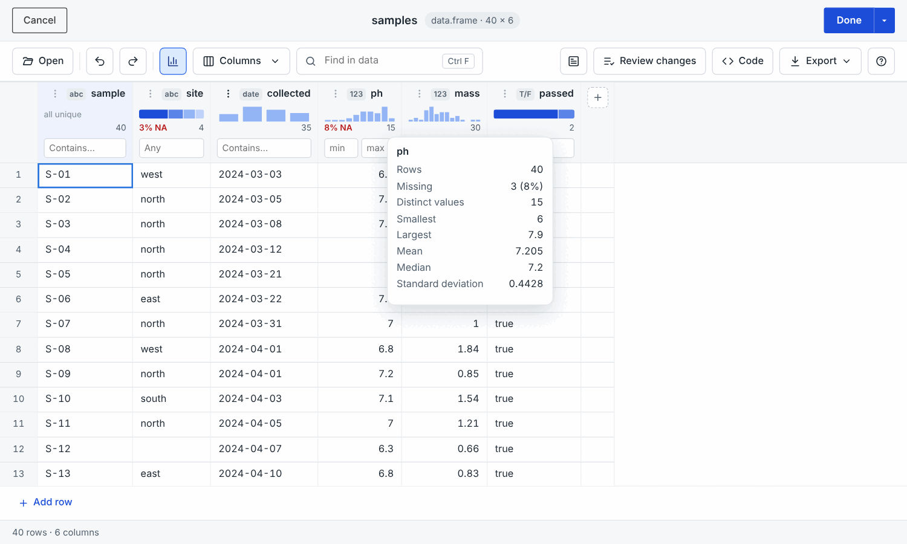
The summaries are updated as you edit. Hide them with the chart
button in the toolbar (the editor remembers your choice), or set
col_summary = FALSE to leave them out.
2. Data Import
data_edit() can read in any form of tabular data from
file for viewing and editing. By default data_edit() will
use read.csv from the utils package to read in
files, but this can be changed to any reading function by supplying the
name of the function to the read_fun argument. If you need
to pass any additional arguments to your reading function, these can be
supplied as a named list to the read_args argument.
mtcars <- data_edit("mtcars.csv",
read_fun = "read.csv",
read_args = list(header = TRUE,
row.names = 1))
head(mtcars)#> mpg cyl disp hp drat wt qsec vs am gear carb
#> Mazda RX4 21.0 6 160 110 3.90 2.620 16.46 0 1 4 4
#> Mazda RX4 Wag 21.0 6 160 110 3.90 2.875 17.02 0 1 4 4
#> Datsun 710 22.8 4 108 93 3.85 2.320 18.61 1 1 4 1
#> Hornet 4 Drive 21.4 6 258 110 3.08 3.215 19.44 1 0 3 1
#> Hornet Sportabout 18.7 8 360 175 3.15 3.440 17.02 0 0 3 2
#> Valiant 18.1 6 225 105 2.76 3.460 20.22 1 0 3 1The name of an object in your R session can also be supplied as a
character string, e.g. data_edit("mtcars").
2.1 Open other data without leaving the editor
The Open menu in the toolbar switches to other data
without having to close the data editor. You can load any data frame,
matrix or dbplyr table from your R session by name, upload
a file (read with read_fun and read_args) or
create a new empty table with a chosen number of rows and columns.
Opening other data replaces the data in the editor, and
Done returns the data that is open at the time.
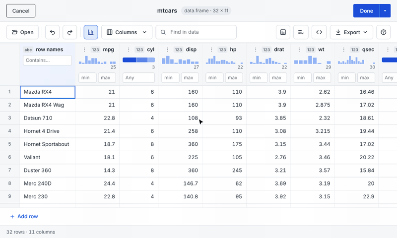
2.2 SPSS, Stata and SAS files
data_edit() reads SPSS (.sav,
.por), Stata (.dta) and SAS
(.sas7bdat, .xpt) files with the
haven package, from a file name or from the
Open menu, and edits data that was read with
haven (or labelled with the labelled or
sjlabelled packages) without losing its labels:
# Read and edit an SPSS file, and save it again with its labels
data_edit("survey.sav", save_as = "survey.sav")
# Or edit data read with haven
survey <- haven::read_sav("survey.sav", user_na = TRUE)
survey <- data_edit(survey)-
Variable labels (what a column holds) are shown
when you hover over a column name, in the column summary and in the
Recordtab. -
Value labels are shown next to the values
(
1 Male), and columns with value labels have anlblbadge. The cell editor lists the labels, and you can type or paste a label (Female) instead of its value (2). Other values can still be typed. -
User-defined missing values of SPSS files
(e.g.
-99 No answer) are shown in grey italics, count as missing in the column summaries and are kept as values.
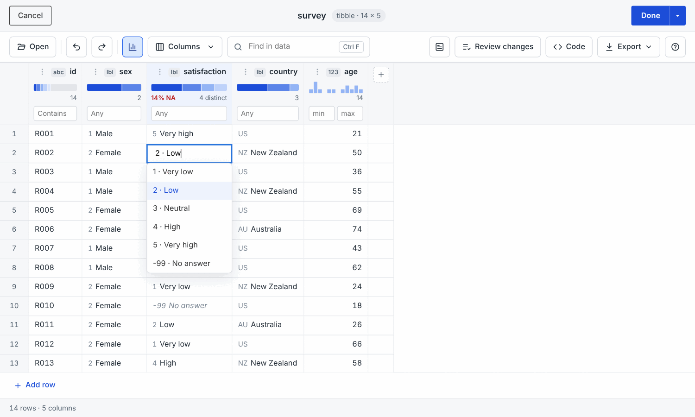
Choose Labels... from a column’s menu to change its
variable label or its value labels, written one per line as
value = label. The dialog shows how many rows have each
value, and the change is recorded as one step in the code:
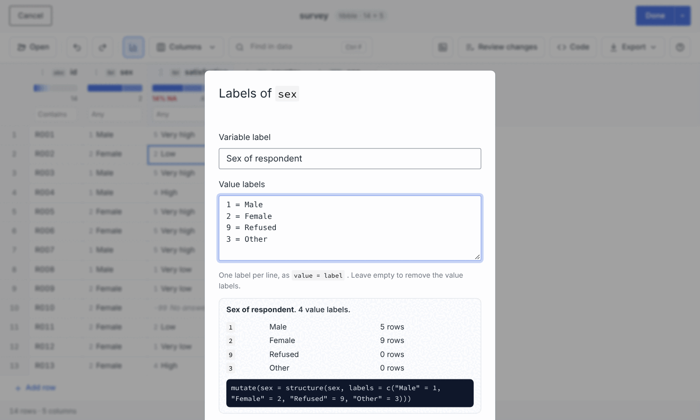
survey <- survey %>%
mutate(sex = structure(sex, labels = c("Male" = 1, "Female" = 2, "Refused" = 9, "Other" = 3)))Change type turns a labelled column into a factor or
text using its labels (haven::as_factor()), or into plain
numbers (haven::zap_labels()). The returned data keeps the
variable labels, value labels and missing values, and so does the
generated code. When save_as ends in .sav,
.dta or .xpt the data is written with
haven, and the Export menu can download the
data as an SPSS or Stata file.
2.3 Spatial data and list columns
Columns that hold a list per row, such as the geometry of an
sf object, are shown as text
(e.g. MULTIPOLYGON (((-81.47 36.23, ...) and cannot be
edited, while the other columns can. sf objects are
returned as sf objects with their geometry, so the
attributes of spatial data can be edited in place:
library(sf)
nc <- st_read(system.file("shape/nc.shp", package = "sf"))
nc <- data_edit(nc)Data without any rows opens with one empty row to type in. The row is only returned once something has been entered in it.
3. Data Manipulation
data_edit() provides a variety of spreadsheet-style
tools to edit your data. We will explore the use of each of these tools
below, using mtcars as an example:
data_edit(mtcars)Many of the tools can also be reached through the keyboard; press
? inside the data editor or click the ? button
in the toolbar to see the full list of shortcuts (see Keyboard shortcuts).
3.1 Edit cells
Double-click a cell to edit it, then press Enter to save
the new value or Esc to cancel. Values are checked against
the type of the column: numbers are stored as numbers, dates as dates
and TRUE/FALSE as logicals. Typing
NA or clearing a cell stores a missing value.
Values typed in other common formats are converted for you:
1,234.5 or 45% in a number column,
15/03/2024 in a date column (see Copy and paste with
spreadsheets for how the order of day and month is decided) and
yes or no in a
TRUE/FALSE column.
If you type something that does not fit a number, date or
TRUE/FALSE column, data_edit()
asks what you would like to do instead of silently converting the whole
column to text. You can store a missing value, convert the column to
text or cancel the edit.
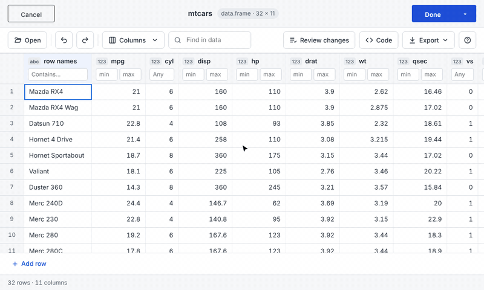
3.2 Select, copy, paste, clear and fill
Click and drag (or Shift + click) to select a range of
cells. The status bar shows the sum, mean and count of the selected
numbers, just like a spreadsheet. Selected cells can be copied
(Ctrl+C) and pasted (Ctrl+V) within the data
editor or to and from other software such as Excel, cleared with
Delete, or filled down with the value in the first row of
the selection (Ctrl+D). A paste, fill or clear is a single
step that can be undone. Click a column header to select the whole
column.
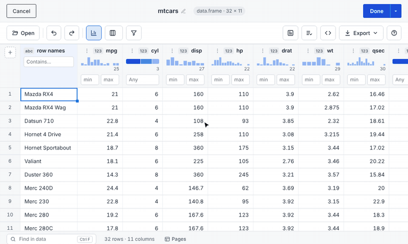
To fill cells like in a spreadsheet, drag the small square at the bottom-right corner of the selection down, up or across. The cells it passes over are outlined and filled when you let go:
- One selected value is copied into every cell.
- Two or more numbers, dates or texts ending in a number that go up
(or down) by the same step carry on as a series:
1, 2gives3, 4, 5, a week of dates gives the following weeks, month ends give the following month ends andWeek 1, Week 2givesWeek 3, Week 4. - Anything else is repeated,
e.g.
TRUE, FALSE, TRUE, FALSE. - Hold
Ctrlwhen you let go to copy the selection without carrying on a series.
Like a paste, a fill is one step that can be undone and values that
do not fit a column are asked about first. Ctrl+D (or
Fill down in the right-click menu) copies the first row of
the selection into the rows below it.
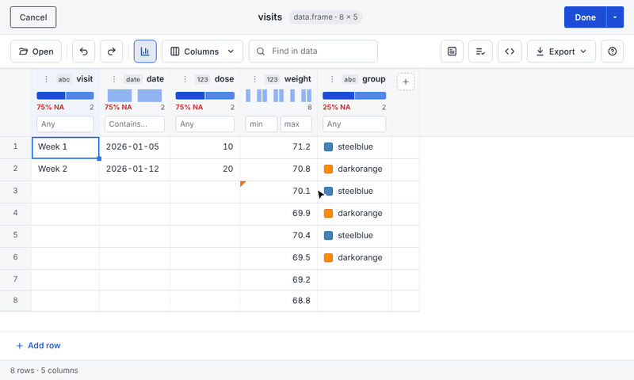
3.3 Copy and paste with spreadsheets
Copy cells in Excel, Google Sheets, LibreOffice or any other software
that copies tables as text, click a cell in the data editor and press
Ctrl+V:
- The block is pasted from the selected cell. Selecting a larger range that is a multiple of the block (e.g. ten cells for a single value) fills the range by repeating the block.
- If the block has more rows than there are below the selected cell,
rows are added at the end of the data (unless
row_edit = FALSE). If it has more columns than there are to the right, columns namedV1,V2, … are added at the end (unlesscol_edit = FALSE), in the same step. - Press
Ctrl+Shift+Vinstead to use the first row of the block as column names: the columns the block lands in are renamed (unless their names cannot be edited) and the columns it adds are named after it. - Line endings from Windows, Mac or Linux, the line break that spreadsheets add after the last row, and cells containing line breaks, tabs or quotes are all handled.
- Values are converted to the type of their column. Formatted numbers
such as
1,234.5,$12.50or45%become1234.5,12.5and0.45. Dates such as15/03/2024,15.03.2024or2024/3/15become2024-03-15: whether the day or the month comes first is worked out from values such as15/03that can only be read one way, and otherwise follows the language of your browser (month first for US English).yes/no,TRUE/FALSEand1/0become logicals. - If some values still do not fit their column (for example
n/ain a numeric column, or a value that is not one of the options of a dropdown menu), the data editor asks once for the whole paste whether to store them as missing values, convert the column to text or cancel the paste. - Read-only columns are skipped. When rows are filtered or columns are hidden, the block is pasted into the rows and columns on screen.
- A paste is a single step that can be undone, and the pasted cells are selected afterwards.
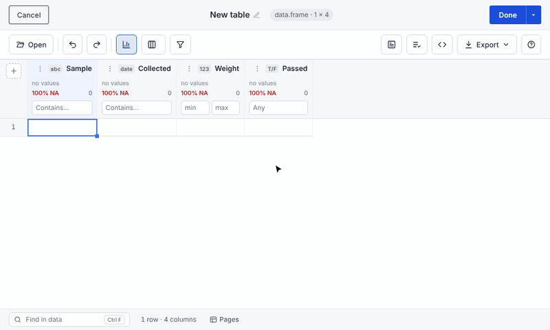
Ctrl+C copies the selected cells both as text and as a
table, so they can be pasted into spreadsheets, documents or back into
the data editor. Missing values are copied as empty cells, logicals as
TRUE and FALSE, and cells containing line
breaks or tabs are quoted, as spreadsheets expect.
3.4 Undo and redo
Every change can be undone with Ctrl+Z (or the undo
button in the toolbar) and redone with Ctrl+Y (or the redo
button). This includes edits, pasted ranges, cleared or filled cells,
added or removed rows and columns, renamed columns and changes reverted
from the review panel. A paste, fill or clear of many cells is undone in
a single step, as shown at the end of the animation above. Undo and redo
are also available from the right-click menus.
3.5 Addition or removal of rows or columns
Rows or columns can be added to the data from within the data editor by right clicking on a cell or a column header. Right-clicking a cell offers to insert rows above or below, delete the selected rows, fill down and insert a column to the left or right of the cell; right-clicking a column header offers to rename, insert, hide or delete columns.
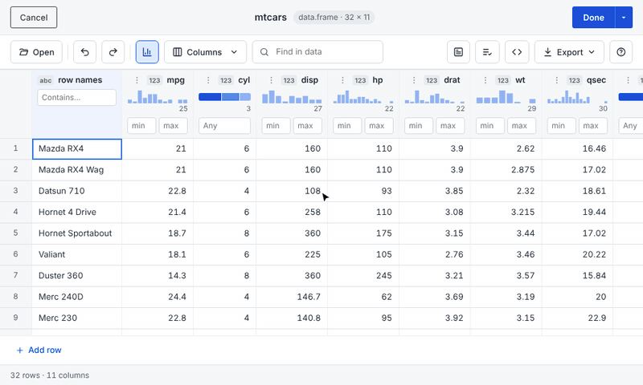
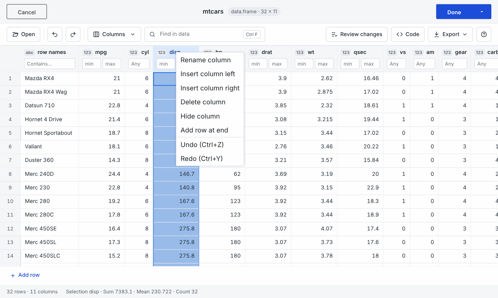
New rows can also be added to the end of the data with the
+ Add row button under the grid, and new columns with the
+ button after the last column header. New columns start
empty and their type is worked out from the values you enter when the
data is returned.
To move cells rather than whole rows, select the cells and choose
Insert cells, shift down from the right-click menu: empty
cells are inserted and the cells below them, in the selected columns
only, move down (a row is added at the end when values would otherwise
fall off). Delete cells, shift up removes the selected
cells and moves the cells below them up. Both are one step that can be
undone; clear the filters first, so that cells are not moved past rows
that are hidden.
To prevent users from adding or removing rows or columns, set
row_edit = FALSE or col_edit = FALSE
respectively.
data_edit(mtcars,
row_edit = FALSE,
col_edit = FALSE)3.6 Rename rows or columns
data_edit() has full support for editing row and column
names. Double-click the name of a column (or choose
Rename column from its menu) to rename it; the new name
must be unique and cannot be empty. Row names are edited like any other
cell in the row names column, and must be unique: a name
that another row already has is refused and the cell goes back to its
old name. The row indices cannot be edited. To keep the row names out of
sight (they are still returned), set row_names = FALSE.
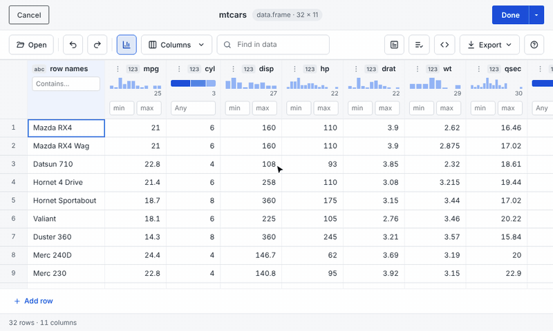
To prevent users from editing column names, set
col_names = FALSE or supply the names of the columns that
cannot be renamed. For example, if we only wanted to prevent users from
renaming the mpg column:
data_edit(mtcars,
col_names = "mpg")3.7 Resize columns
To resize columns, go to the right-hand border of the header of that
column and drag the cursor to the desired width (shown at the end of the
animation above). Columns keep their width while you edit, including
when changes are undone or redone. Columns start as wide as their
values, but no wider than 320 pixels, so long text does not push the
other columns off screen. Set the starting widths in pixels with
col_widths, either one width for every column or widths by
column name:
data_edit(samples,
col_widths = c(notes = 400, id = 60))
``` To make the columns fill the width of the editor instead, see [Stretch columns to fill page](#stretch-columns-to-fill-page).
### 3.8 Find values
Press `Ctrl+F` or click `Find in data` to search the rows and columns on screen. The first matching cell is selected and the number of matches is shown (e.g. `1 of 7`); press `Enter` to jump to the next match, `Shift+Enter` to go back and `Esc` to clear the search.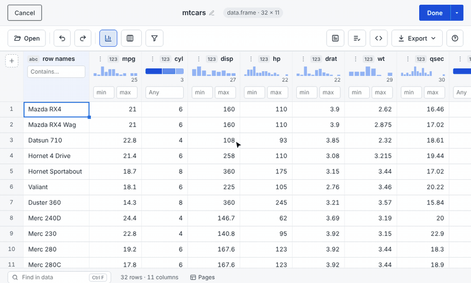
3.9 Append columns or rows
data_edit() can perform rbind and
cbind operations internally to append new rows or columns
to the data prior to editing. The new rows or columns can be supplied as
a matrix or data.frame, a named list or, for empty rows or columns, a
vector of names to the row_bind or col_bind
arguments. If binding both rows and columns, it is important to note
that rows are bound before columns.
# New column to add
new_col <- matrix(rep(NA, nrow(mtcars)),
ncol = 1,
dimnames = list(NULL, "test"))
# Edit data with new column added
data_edit(mtcars,
col_bind = new_col)
# Add two empty rows and an empty column called "notes"
data_edit(mtcars,
row_bind = c("New car 1", "New car 2"),
col_bind = "notes")3.10 Read-only and hidden columns
If you would like to prevent values from being edited in certain
columns, you can supply the names of the columns that cannot be edited
to the col_readonly argument. Read-only columns show a lock
next to their name, and their values and names cannot be changed. For
example, if we wanted to prevent the mpg column from being
edited:
data_edit(mtcars,
col_readonly = "mpg")Columns that users should not see at all can be supplied to
col_hide. Hidden columns cannot be viewed or edited, but
they are kept in place in the returned data.
3.11 Factor columns
data_edit() fully supports data frames with factor
columns, including ordered factors. Factor columns are edited as text,
so you can freely enter new values without encountering errors, and are
returned as factors with their original levels in their original order.
New values become new levels after the existing ones, and levels that
are no longer used are kept, as R does when values of a factor are
replaced.
# Create data with a factor column
df <- data.frame(
name = c("Alice", "Bob", "Charlie"),
group = factor(c("A", "B", "A"))
)
# Change Bob's group to "C" in the editor
df_edited <- data_edit(df)
levels(df_edited$group)
#> [1] "A" "B" "C"Character columns are returned as text. Set
col_factor = TRUE to turn them into factors as well (their
levels are sorted, as factor() does).
3.12 Change whole columns
Click the ⋮ button in a column’s header (or right-click
the header) for actions that change the whole column at once. Each
action opens a dialog that previews the result before you apply it:
-
Formula…: add a new column, or replace the values
of the column, with an R expression worked out for every row,
e.g.
round(mpg * 0.425, 1),paste(first, last)orcase_when(ph < 7 ~ "acidic", ph > 7 ~ "basic", .default = "neutral"). Formulas can use column names, numbers, text in quotes and common functions (arithmetic,round(),ifelse(),paste(),substr(),as.Date(),case_when(),if_else(),lag(),row_number(), …), but not other R code, so they are safe to offer in shiny apps. -
Find and replace…: replace text within cells
(matching case or not, or with a regular expression), or replace whole
cells. For numbers and dates whole cells are replaced; leave
Findempty to fill missing values, orReplace withempty to clear the cells. - Recode values…: lists the values of the column, the most common first, with a box to type a new value for each.
-
Change type: number, whole number, text,
TRUE/FALSE, date or factor. If some values cannot be converted (e.g."x"to a date), you are told which ones before they become missing. - Sort ascending / Sort descending: put the rows in order of the column.
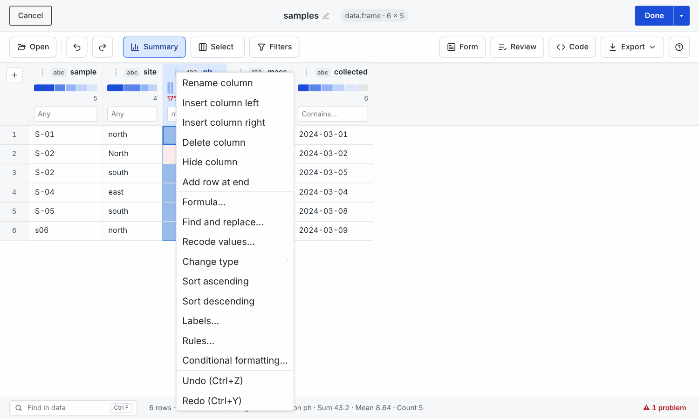
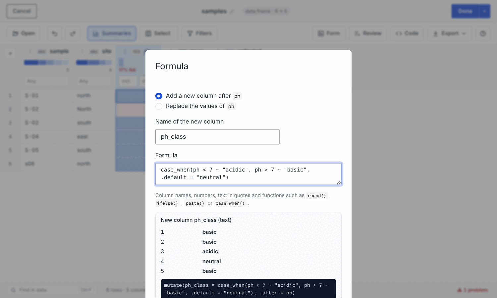
Each action is recorded as a single dplyr verb, so the
code that reproduces your edits (see Exporting
Code) says what you did, rather than listing every value that
changed:
samples <- samples %>%
mutate(ph_class = case_when(ph < 7 ~ "acidic", ph > 7 ~ "basic", .default = "neutral"), .after = ph) %>%
mutate(site = case_match(site, "North" ~ "north", .default = site))The editor applies an action by running that same verb on your data,
so the code always gives exactly the result you saw. Actions can be
undone like any other change, and appear in the History tab
with their code. Set col_actions = FALSE to remove them
from the column menu.
3.13 Edit one record at a time
Wide tables are easier to fill in one record (row) at a time. Click
the form button in the toolbar, or the Record tab of the
side panel, to see the selected row as a form with a labelled field for
each visible column:
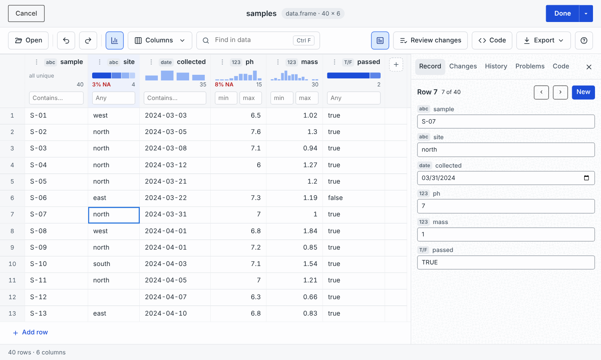
- The fields use the same inputs as the grid (dropdown menus, dates,
TRUE/FALSE, …) and the same checks, so a value that does not fit its column asks whether to storeNA. - Press
Enterto save a field and move to the next one. - Broken validation rules are shown under the fields they concern, and changed fields are marked.
- The arrows move to the previous or next row on screen (filters apply), and the grid follows; selecting a cell in the grid shows its row in the form.
-
Newadds a row at the end and puts the cursor in its first field.
Changes made in the form are ordinary edits: they can be undone, are listed in the review panel and appear in the code.
3.14 Comments on cells
Right-click a cell and choose Add comment (or select it
and press Shift+F2) to leave a comment on it: why a value
was changed, what still needs checking or where it came from. Press
Ctrl+Enter or Save to keep the comment and
Escape to close it without saving. Commented cells have an
amber corner; rest the pointer on the cell (or open the record form) to
read the comment, and right-click it to edit or delete it. To start
afresh, right-click any cell and choose
Delete all comments; the editor asks first, as deleted
comments cannot be brought back with undo.
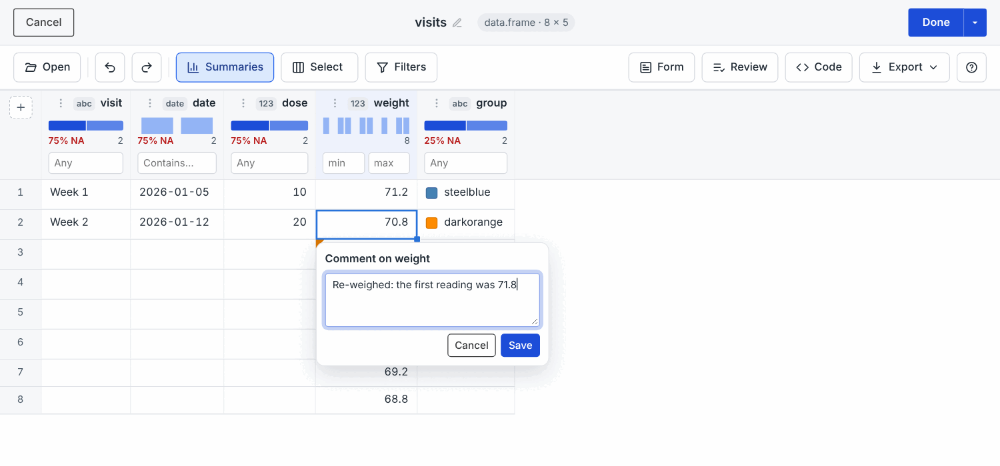
Comments are returned with the data as the comments
attribute, a data frame with the row (its number in the
returned data), the column, the comment, the
user who wrote it and the time. Data that has
this attribute opens with its comments, so they can be kept from one
session to the next. Rows can also be given by their row names:
cars <- data_edit(mtcars)
attr(cars, "comments")
#> row column comment user time
#> 1 3 mpg Checked against the 1974 table ana 2026-11-02 09:27:27
# Comments of your own
attr(mtcars, "comments") <- data.frame(row = "Datsun 710", column = "mpg",
comment = "Checked against the 1974 table")
data_edit(mtcars)Comments are kept in drafts with the changes, but they are not changes to the data: they are not undone and not listed in the review panel.
4. Data Creation
You can also use data_edit() to interactively create
data.frames from scratch without any coding.
4.1 Start with empty template
If no data is supplied to data_edit() an empty
data.frame will be constructed with 10 rows and columns. You can then
build your data.frame from scratch by adding new rows and columns and
annotating the cells.
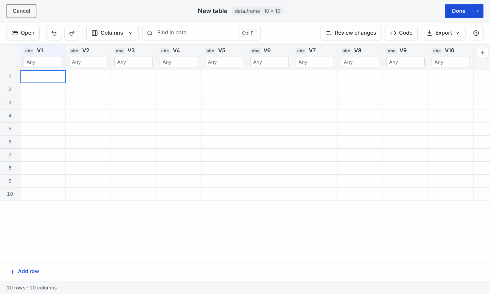
The dimensions of the template can be controlled by supplying a
vector of the form c(nrow, ncol) to indicate the number of
rows and columns to use.
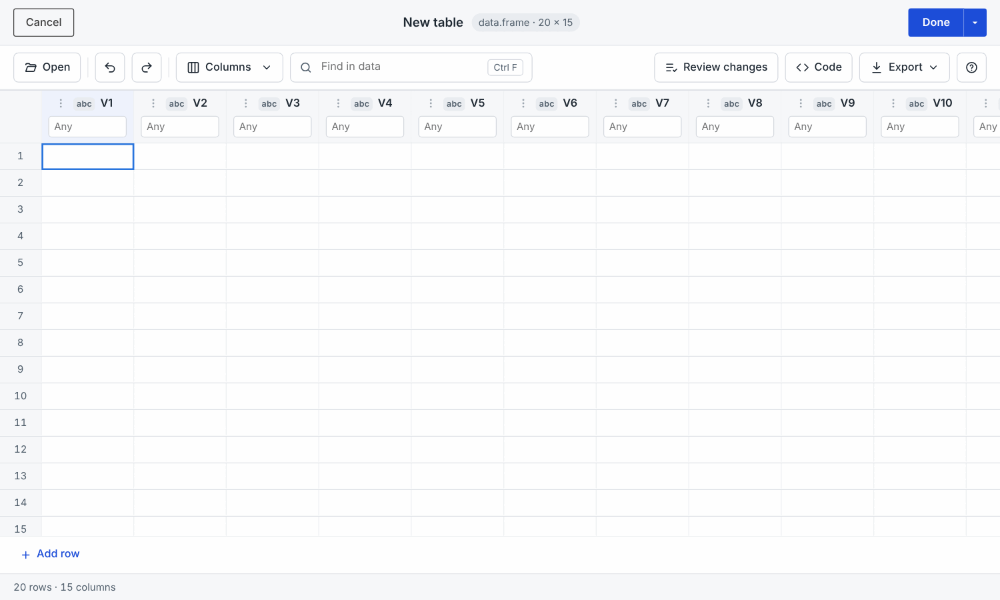
4.2 Start with a labelled template
Alternatively, you can pass a vector of column names to create a
data.frame template with pre-defined column names. Use
+ Add row to add as many rows as you need.
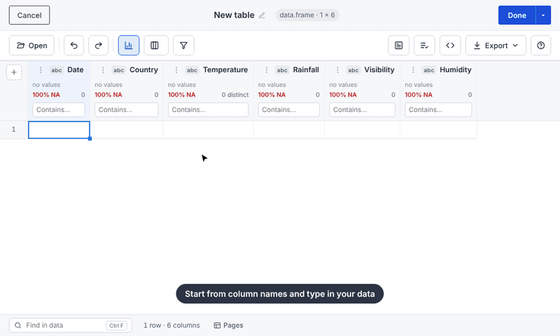
The columns of a template are typed automatically when the data is returned, so a column in which you only entered numbers is returned as a numeric column.
5. Data Filtering
data_edit() makes it easy to view and edit a subset of
your data: filter rows by typing under the column headers and show or
hide columns from the Columns menu. Edits made to a subset
are applied directly to the complete dataset.
5.1 Row filtering
Every column has a filter box under its name and the box depends on the type of the column:
-
numbers have
minandmaxboxes to keep values within a range; -
columns with a few distinct values
(e.g.
cylorgear) have a list to pick one or more values (Anymeans no filter); -
text columns keep values that contain what you
type; start with
!(e.g.!set) to keep the values that do not contain it.
Clicking a bar of a column’s summary (see Column summaries) sets its filter for you,
and clicking the share of missing values shows only the rows where the
value is missing. Rows must match every filter to be shown. Active
filters are listed as chips in the toolbar; click the x on
a chip to remove that filter or Clear filters to remove
them all. The status bar shows how many of the rows are on screen.
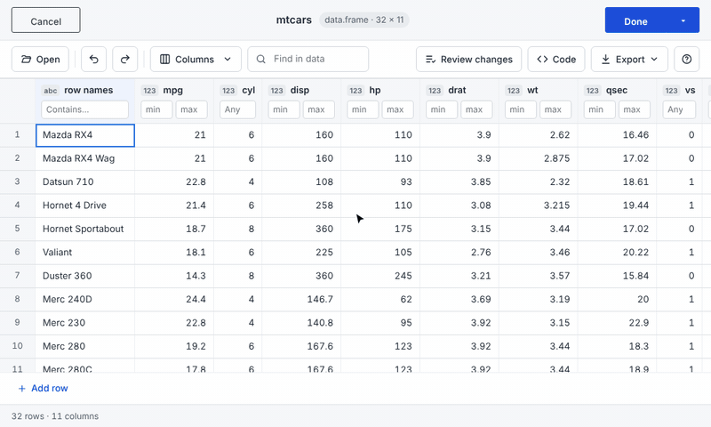
5.2 Column selection
Click Columns in the toolbar to show or hide columns, or
choose Hide column from the menu of a column header.
Show all and Hide all change every column at
once, and the button shows how many columns are visible.
Columns can also be hidden before the data editor opens
(col_hide, see Read-only and hidden columns);
those columns are not listed in the Columns menu and cannot
be shown by the user.
5.3 Edits apply to the complete dataset
Filtered rows and hidden columns are only views onto your data, so any change you make while a filter is active is made directly to the complete dataset, without requiring any additional action (earlier versions of DataEditR needed a sync button for this). Rows added while a filter is active stay visible until the filters change, so you can fill them in even if they do not match the filters yet.
5.4 Return or export data subsets
data_edit() will return the complete dataset as an R
object for downstream use by default. If you would like to return just
the rows and columns that are on screen, open the menu next to the
Done button and choose Only what's on screen
before pressing Done. The menu shows the size of the data
that each option returns.
#> 'data.frame': 14 obs. of 7 variables:
#> $ mpg : num 21 21 22.8 21.4 24.4 22.8 32.4 30.4 33.9 21.5 ...
#> $ cyl : num 6 6 4 6 4 4 4 4 4 4 ...
#> $ disp: num 160 160 108 258 147 ...
#> $ hp : num 110 110 93 110 62 95 66 52 65 97 ...
#> $ wt : num 2.62 2.88 2.32 3.21 3.19 ...
#> $ gear: num 4 4 4 3 4 4 4 4 4 3 ...
#> $ carb: num 4 4 1 1 2 2 1 2 1 1 ...6. Data Saving
data_edit() will automatically return the edited data
with appropriate column classes as an R object for use within R.
Matrices, tibbles and data.tables are returned with their original
class, and the type of each column is kept: numbers stay numbers, dates
stay dates and text that looks like a number (e.g. "001")
stays text. Factor columns are returned as factors with their levels,
while character columns are not converted to factors unless
col_factor = TRUE is set (see Factor columns).
# Add character column
mtcars_new <- cbind(rownames(mtcars), mtcars)
colnames(mtcars_new)[1] <- "car"
# Convert characters to factors
mtcars_new <- data_edit(mtcars_new,
col_factor = TRUE)
str(mtcars_new)#> 'data.frame': 32 obs. of 12 variables:
#> $ car : Factor w/ 32 levels "AMC Javelin",..: 18 19 5 13 14 31 7 21 20 22 ...
#> $ mpg : num 21 21 22.8 21.4 18.7 18.1 14.3 24.4 22.8 19.2 ...
#> $ cyl : num 6 6 4 6 8 6 8 4 4 6 ...
#> $ disp: num 160 160 108 258 360 ...
#> $ hp : num 110 110 93 110 175 105 245 62 95 123 ...
#> $ drat: num 3.9 3.9 3.85 3.08 3.15 2.76 3.21 3.69 3.92 3.92 ...
#> $ wt : num 2.62 2.88 2.32 3.21 3.44 ...
#> $ qsec: num 16.5 17 18.6 19.4 17 ...
#> $ vs : num 0 0 1 1 0 1 0 1 1 1 ...
#> $ am : num 1 1 1 0 0 0 0 0 0 0 ...
#> $ gear: num 4 4 4 3 3 3 3 4 4 4 ...
#> $ carb: num 4 4 1 1 2 1 4 2 2 4 ...The edited data can also be written to a file of any format by
specifying the name of the file to the save_as argument and
specifying the name of the writing function to use through
write_fun. The default is to use write.csv
from the utils package. You can also pass any additional
arguments to your write function in a named list to
write_args. The data will be written to file when the
Done button is selected, and a message says where it was
saved; untick Also save to in the Done menu to
close the editor without saving. Data that has no row names (only row
numbers) is written without them unless write_args sets
row.names. read_fun and write_fun
can name functions of other packages,
e.g. read_fun = "readxl::read_excel", and
save_as does not have to be a file: with
write_fun = "googlesheets4::write_sheet" it can be a Google
Sheet.
mtcars_new <- data_edit(mtcars,
save_as = "mtcars.csv",
write_fun = "write.table",
write_args = list(sep = ",",
row.names = TRUE))Alternatively, data can be downloaded to file at any time from the
Export menu in the toolbar, either all data or only what is
on screen. Files are named after save_as (with
-subset added for subsets), or after today’s date if
save_as is not supplied, and are written with
write_fun and write_args.
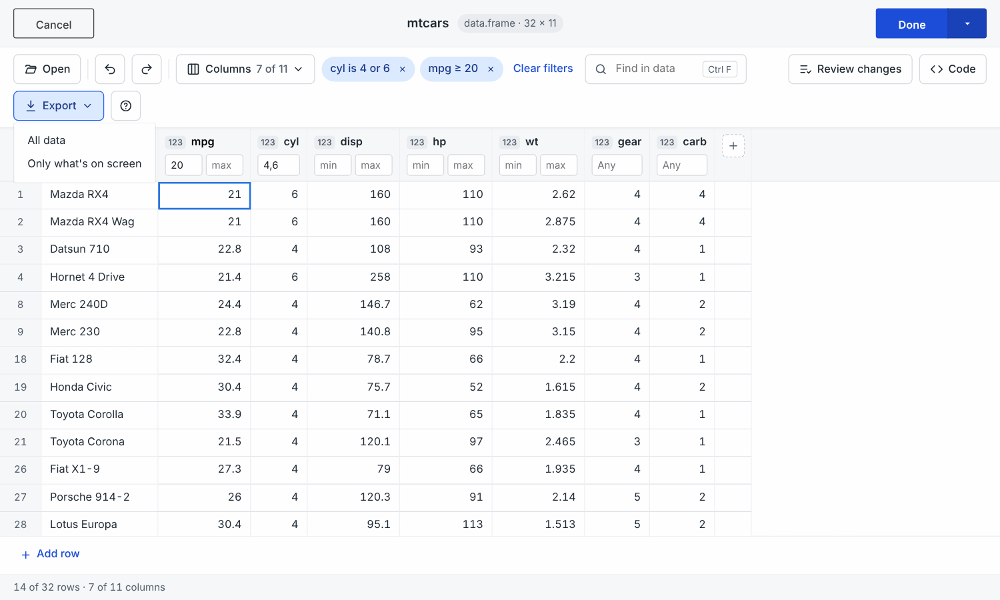
7. Complex user inputs
data_edit() can also be used to accept complex inputs
from users, and these inputs can be restricted, by giving columns a
specific input such as checkboxes, dropdown menus, date pickers, numbers
within limits or ratings. To use this feature, the inputs for the
columns must be supplied in a named list through the
col_options argument. Columns with options can still be
renamed, and users can still add or remove other columns.
col_options entry |
Input | Returned as |
|---|---|---|
c(TRUE, FALSE) or "checkbox"
|
checkbox | logical |
c("A", "B", "C") |
dropdown menu of the values | character (numeric for numbers in a numeric column) |
"dropdown" |
dropdown menu of the values in the column (the levels of a factor) | as the column |
"date" |
date picker | Date |
"datetime" |
date and time picker | POSIXct |
"time" |
time picker | character ("HH:MM") |
"textarea" |
text over several lines | character |
"password" |
hidden text | character |
"url" |
web address with a button to open it | character |
"colour" (or "color") |
colour with a swatch | character |
c(min = 0, max = 10, step = 0.5) |
number within limits (any of the three), in steps of
step from min
|
numeric |
"integer" or
list(type = "integer", min = 0, max = 10)
|
whole number (within limits) | integer |
"slider" or
c(type = "slider", min = 0, max = 1, step = 0.05)
|
slider and bar for numbers within limits (0 to 100 by default) | numeric |
"rating" or
c(type = "rating", stars = 10)
|
star rating (5 stars by default) | numeric |
Columns are converted to the type their input needs when the data editor opens, and values that do not fit a column’s input, whether typed or pasted, are caught before they are stored. Values already in the data that do not fit (for example a value above the maximum of a slider, or a value that is not one of the options of a dropdown menu) are kept but marked with a red line, and hovering over them says why.
Columns named in col_options, col_readonly,
col_hide or col_widths that are not in the
data are ignored, with a message, so the same settings can be used for
different data (for example in a shiny app where the data changes).
The limits of sliders and numbers and the number of stars of ratings can be customised by giving the type together with its settings:
data_edit(samples,
col_options = list(
# proportions from 0 to 1 in steps of 0.05
done = c(type = "slider", min = 0, max = 1, step = 0.05),
# a rating out of 10 stars
quality = c(type = "rating", stars = 10),
# numbers from 0 to 14 (type = "number" is optional here)
ph = c(min = 0, max = 14, step = 0.1)
))list(type = "slider", min = 0, max = 1, step = 0.05)
works too. A slider without settings runs from 0 to 100 in steps of 1,
and a rating has 5 stars.
The animations in this section use the following data, with all four
kinds of input and a read-only mpg column:
cars <- data.frame(
car = rownames(mtcars)[1:10],
mpg = mtcars$mpg[1:10],
fast = mtcars$mpg[1:10] > 21,
colour = c("red", "blue", "black", "green", "red",
"orange", "blue", "black", "green", "red"),
bought = as.Date("2024-01-15") + c(0, 31, 45, 90, 120, 151, 200, 230, 260, 301),
pin = c("4821", "1937", "5560", "0042", "7713",
"2468", "1357", "9090", "3141", "2718")
)
data_edit(cars,
col_options = list(fast = c(TRUE, FALSE),
colour = c("red", "blue", "orange", "green", "black"),
bought = "date",
pin = "password"),
col_readonly = "mpg")7.1 Checkboxes
Checkboxes can be used to obtain TRUE or
FALSE value inputs from users. Double-click a checkbox cell
and click the box (or press Space) to change its value;
ticked cells are returned as TRUE. A new checkbox column
can be added to existing data with col_bind:
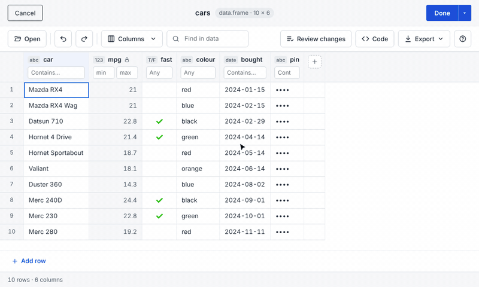
7.2 Dropdown menus
Dropdown menus can be used to help prevent typing errors when a set
number of options are available for a column. For example, if we have a
factor with levels Treatment-A, Treatment-B or
Treatment-C it would be easier to select these options from
a dropdown menu instead of having to manually type them. Dropdown menus
can be added in the same way as checkboxes.
# Add column for car colour
data_edit(mtcars,
col_bind = "colour",
col_options = list(colour = c("red",
"blue",
"orange",
"green",
"black")))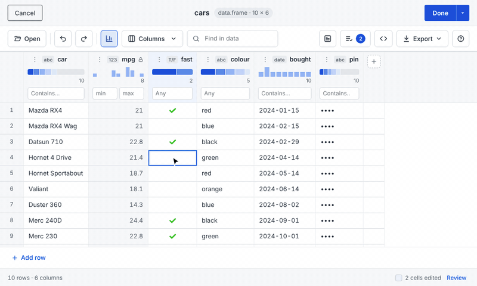
Typing in a dropdown cell narrows the list down to the matching options, and only the listed options can be entered.
To show names that differ from the values that are stored, give the
options as a named list (as for shiny::selectInput()). The
cells, the menu and the filter show the names, the data keeps the
values, and typing or pasting a name stores its value:
data_edit(sites,
col_options = list(state = list(`New South Wales` = "NSW",
Victoria = "VIC",
Queensland = "QLD")))To offer the values that are already in a column, give
"dropdown" on its own. Factors offer their levels, other
columns their distinct values:
7.3 Dates
Dates can be entered interactively by selecting the relevant day from
a calendar. To convert a column to accept interactive date inputs,
supply a list with the name of the column and "date" as the
option to col_options. The column is returned as a
Date column.
data_edit(c("date", "time", "region", "temperature"),
col_options = list(date = "date", time = "time"))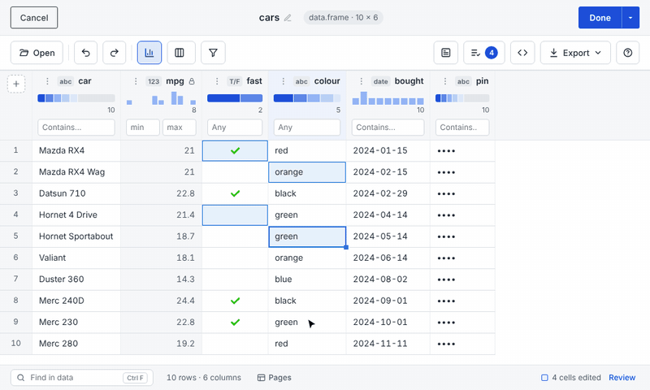
7.4 Passwords
If you would like to keep your data entries a secret, you can convert
relevant columns to accept passwords as inputs. The data is entered as
per usual, but the values are displayed as dots to conceal the entered
data. To convert a column to accept password inputs, supply a list with
the name of the column and "password" as the option to
col_options.
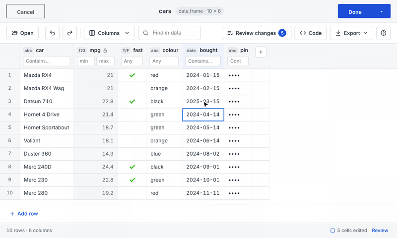
The values are only hidden on screen: they are returned (and saved
with save_as) as plain text.
7.5 More column types
The animation below uses sample records with the other column types:
samples <- data.frame(
sample = c("S-01", "S-02", "S-03", "S-04", "S-05"),
notes = c("Clear.\nStored at 4\u00b0C", "Slightly cloudy", NA,
"Re-run\nfollowing QC", "Clear"),
received = c("2024-03-15 09:30:00", "2024-03-15 11:05:00",
"2024-03-16 08:45:00", NA, "2024-03-18 14:20:00"),
start = c("09:30", "10:15", NA, "13:00", "15:45"),
ph = c(7.1, 6.8, 7.4, NA, 7.0),
done = c(100, 60, 25, 0, 80),
quality = c(5, 3, 4, NA, 2),
protocol = c("https://www.protocols.io", NA, "https://www.r-project.org",
NA, NA),
label = c("#1D4ED8", "orange", "seagreen", "#E11D48", "purple")
)
data_edit(samples,
col_options = list(notes = "textarea",
received = "datetime",
start = "time",
ph = c(min = 0, max = 14, step = 0.1),
done = "slider",
quality = "rating",
protocol = "url",
label = "colour"))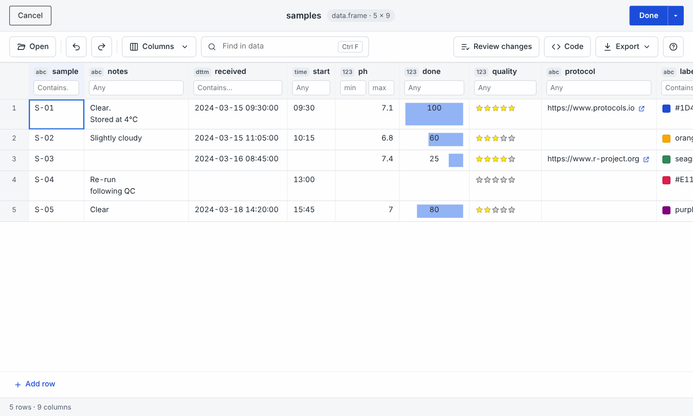
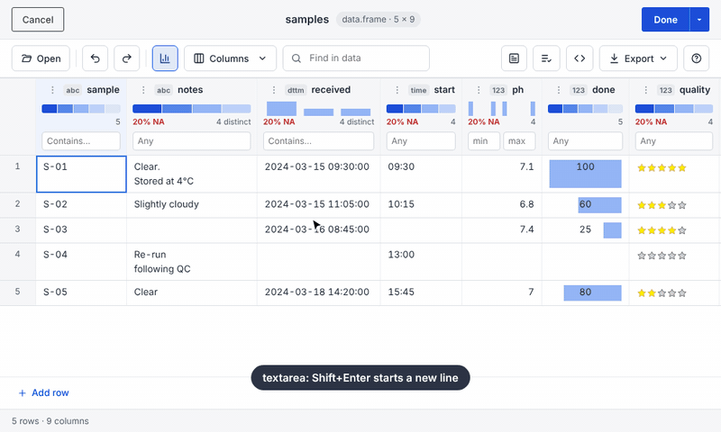
-
Text over several lines (
"textarea"): the cell grows to show every line.Entersaves the text like in any other cell, whileShift+EnterorAlt+Enterstarts a new line. -
Date-times and times (
"datetime","time"): pickers for both. Date-time columns are returned asPOSIXct; times are returned as text such as"14:30", whichas.difftime()or thehmspackage can convert. Columns that are alreadyPOSIXctcan be typed into without an option (e.g.2024-03-15 14:30). -
Numbers within limits
(
c(min = , max = , step = )): values outside the limits are flagged, and thestepsets how much the arrows of the number box change the value. -
Sliders and ratings (
"slider","rating"): a bar shows each value; double-click to drag the slider (or use the arrow keys) or to click a star. Clear a cell withDeleteto store a missing value. -
Web addresses (
"url"): addresses starting withhttp://,https://ormailto:get a button that opens them in a new tab; double-click the cell to edit the address. -
HTML (
"html"): the cells are shown as HTML, e.g.Photo:<br/><a href="https://...">details</a>as a line break and a link that opens in a new tab. Text formatting, lists, links and images are shown; scripts, styles, forms and event handlers are removed. Double-click a cell to edit its HTML. -
Colours (
"colour"): a swatch is shown next to each colour, for R colour names such as"grey50"or"steelblue"and hex codes such as"#1D4ED8"; values that are not colours get a dashed swatch. Double-click a cell to type a colour or pick one: the swatches offer the colours already in the column, R’s palette and the colour-blind-safe Okabe-Ito palette, andOther colour...opens the browser’s colour picker. Set the swatches with e.g.list(type = "colour", palette = c("steelblue", "darkorange", "#009E73")).
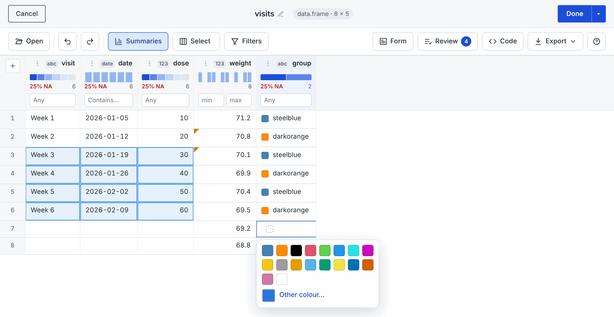
7.6 Validation rules
Column inputs stop values that do not fit a single cell. Rules check
the data as a whole: that values are filled in, unique or within limits,
or that columns agree with each other. Supply them to rules
as one-sided formulas that are TRUE for valid rows, named
with the message to show:
data_edit(samples,
rules = list(
"pH is between 0 and 14" = ~ ph >= 0 & ph <= 14,
"The end is after the start" = ~ end >= start,
"Every sample has an ID" = ~ !is.na(sample),
"Sample IDs are unique" = ~ !duplicated(sample)
))Rules are checked after every change. Cells that break a rule get a
red corner and a tooltip with the message, the status bar counts the
problems and the Problems tab lists them; click a row to go
to it. Missing values pass a rule unless it says otherwise, so
end >= start only checks rows where both dates are
filled in.
You can also add rules from a column’s menu (Rules...):
make the column required or unique, set the smallest and largest values
of numbers and dates, give a pattern that text must match (a regular
expression such as S-[0-9]{2}) or write a formula. The
dialog shows how many rows break the rules before you save them.
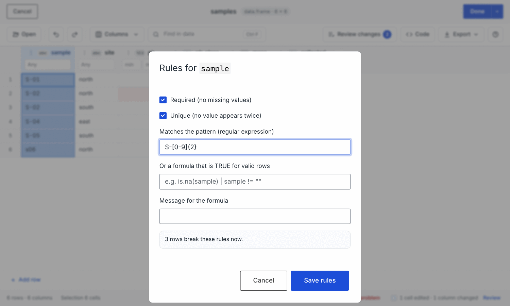
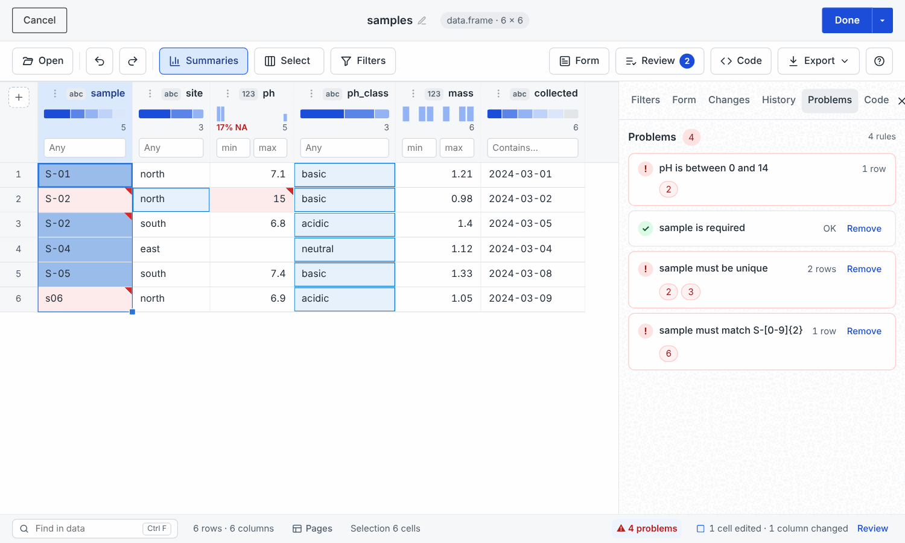
When rules are broken, Done asks whether to return the
data anyway or keep editing. In shiny apps,
dataEditProblems() returns the problems, for example to
disable a Save button until they are fixed.
7.7 Conditional formatting
Conditional formats colour cells by their values, to make the data
easier to read. They change how cells look, not the data. Supply them to
formats:
data_edit(mtcars,
formats = list(
# cells of mpg above 22 in green
"Fast" = list(~ mpg > 22, fill = "#DCFCE7", color = "#166534"),
# whole rows of V8 cars in yellow
"V8" = list(~ cyl == 8, fill = "lightyellow", columns = "all"),
# hp shaded from white (lowest) to red (highest)
list(scale = c("white", "#F87171"), columns = "hp")
))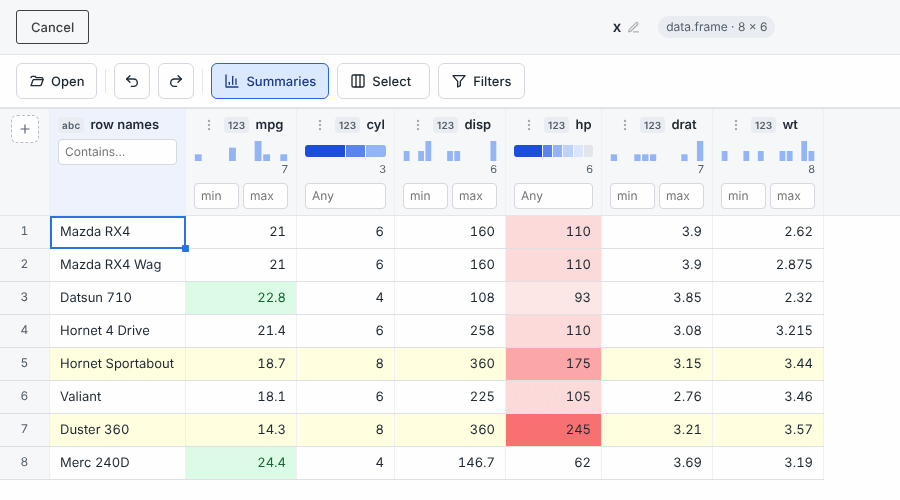
A rule is a one-sided formula that is TRUE for the rows
to colour, with a fill, a text color and/or
bold = TRUE (a formula on its own gets a yellow fill). It
colours the cells of the columns the formula uses; give
columns to colour other columns, or
columns = "all" to colour whole rows. A colour scale shades
the numbers of its columns from the first colour (the
lowest value) to the last (the highest); give three colours for a middle
colour, limits = c(0, 300) to fix the values of the end
colours and mid for the value of the middle one. Colours
can be R colour names or hex codes. When several formats colour a cell,
the later one wins.
Formats are updated after every change. You can also add them from a
column’s menu (Conditional formatting...): highlight the
cells of the column, or whole rows, where the value is greater or less
than a value, between two values, equal to a value, contains some text,
is blank, duplicated, above or below average, among the highest or
lowest, or makes a formula TRUE; or shade the column with a
colour scale. The dialog shows how many rows match before the format is
added, and lists the column’s formats with the code to add each one to
formats, so that it can be kept in your script.
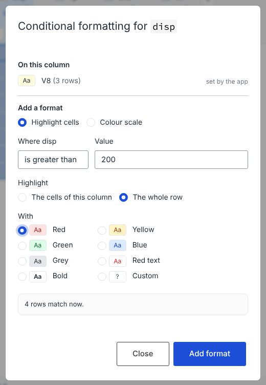
8. Customisation
data_edit() has been designed to be simple, but does
come with some customisation options including column stretching,
addition of logos and/or titles, custom themes and the option to hide
the menus.
8.1 Stretch columns to fill page
If you would like to make full use of the space available to you, you
can set col_stretch = TRUE to stretch the columns to fill
the full width of the display.
data_edit(iris,
col_stretch = TRUE)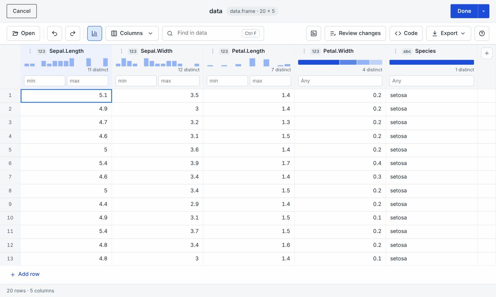
8.2 Logo and title
data_edit() does also have support for adding a logo
and/or title to the data editor. For example, if you wanted to use
data_edit() within your own package you can customise it
with your package logo (the path or URL of an image) and
instructions to the user through title. Use
logo_size to set the width of the logo in pixels and
logo_side to place it on the "left" or
"right" of the title.
logo <- "https://raw.githubusercontent.com/DillonHammill/DataEditR/master/man/figures/logo.png"
data_edit(mtcars,
logo = logo,
logo_size = 26,
title = "Car data")8.3 Custom themes
data_edit() uses Bootstrap 5 through the
bslib package. You can explore the different themes by
supplying the name of a Bootswatch
theme to the theme argument. Alternatively, you can create
your own custom bs_theme and supply that object to
theme instead.
# Preset theme
data_edit(
mtcars,
theme = "flatly"
)
# Custom theme
library(bslib)
custom_theme <- bs_theme(
version = 5,
primary = "#7C3AED",
base_font = font_google("Lato")
)
data_edit(
mtcars,
theme = custom_theme
)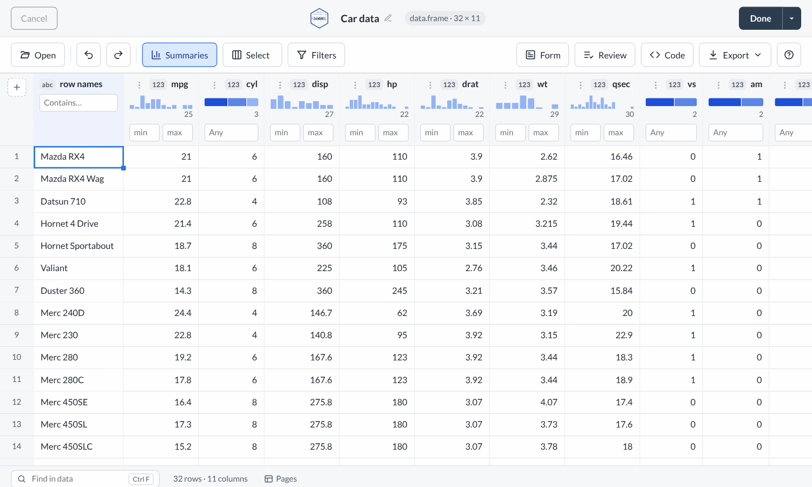
8.4 Simplified editor
Set hide = TRUE to hide the Open and
Export menus and the options of the Done
button, for example when data_edit() is used to collect
data from users. When save_as is supplied the data is still
written to file when Done is pressed.
9. Reviewing and tracking changes
data_edit() keeps track of every change you make, so you
can see what has changed before you hit Done and revert any
change on its own.
9.1 Review changes
The status bar summarises your changes
(e.g. 2 cells edited · 1 row added) and the
Review changes button shows how many changes there are.
Click it to open the review panel, which lists every edited, added,
removed or renamed cell, row and column with its old and new value.
Click the name of a row to jump to it in the grid, Revert
(or Remove / Restore) to undo that one change,
or Revert all to go back to the original data. Reverts can
be undone with Ctrl+Z like any other change.
9.2 Highlight changed cells
Cells that have been edited or added compared to the original data are highlighted with a blue tint and border. Any cell whose value differs from the original, as well as all cells in newly added rows or columns, is highlighted. Highlights follow undo, redo and reverts, and inserting rows or columns does not cause other cells to appear changed.
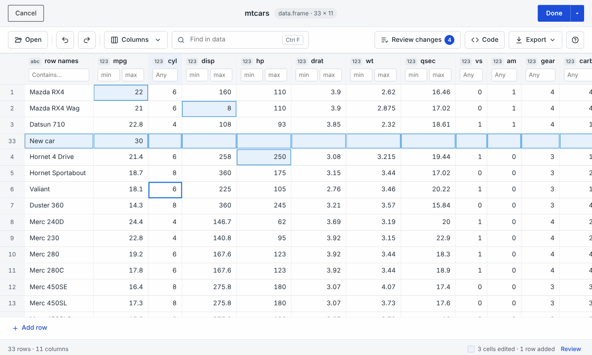
You can pass any valid CSS color to track to customise
the highlight colour, or track = FALSE to turn the
highlighting off. For example, to use red:
data_edit(mtcars,
track = "red")9.3 History and notes
The History tab of the review panel lists every change
in the order it was made, newest first: what was changed, by whom (hover
over the time) and how, so a paste, a fill, a cleared range, an undo or
a revert each show as one step. Undoing a change does not remove it from
the history; it is added as a new step, so the history is a complete
record of the session.
Click Add note under a step to say why the change was
made, for example where a corrected value came from. Press
Enter to save the note or Escape to leave it
as it was.
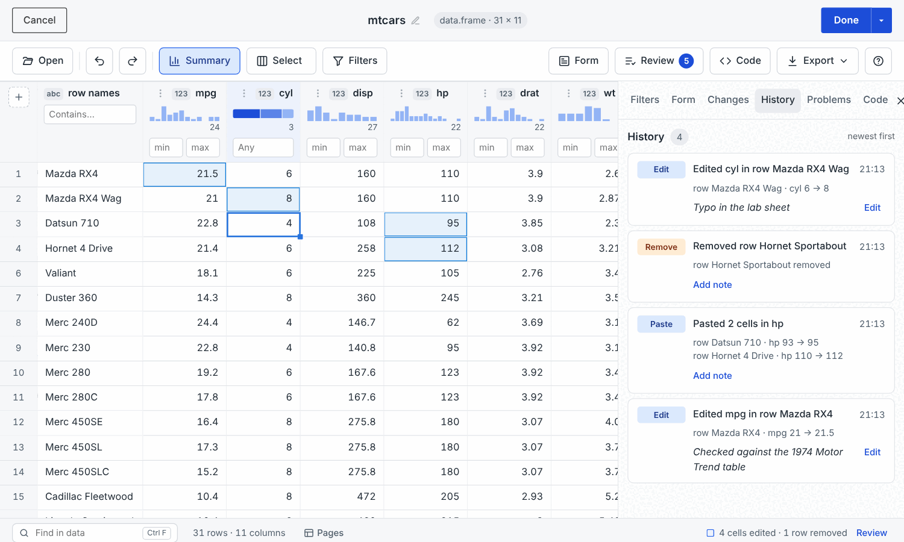
9.4 Keep a change log
Supply the name of a csv file to log to keep the history
when you press Done. Each change becomes one row with the
data that was edited, the time, the
user, the step and how it was
made (and the code of column actions), the
action (edit, add row,
remove row, add column,
remove column or rename column), the
row (its row name, or its number in the data you opened),
the column, the old and new
values and the note. New changes are added to the end of
the file, so one file can keep the history of every editing session of a
dataset or a project:
lab <- data_edit("lab_results.csv",
save_as = "lab_results.csv",
log = "lab_results_log.csv")
log <- read.csv("lab_results_log.csv")
log[, c("time", "user", "how", "row", "column", "old", "new", "note")]
#> time user how row column old new note
#> 1 2026-11-01 14:02:11+1100 ana edit 3 pH 7.9 7.4 Re-measured, meter recalibrated
#> 2 2026-11-01 14:03:40+1100 ana paste 12 mass 1.2 1.25 <NA>Each editing session gets its own session value (when it
started), and the History tab lists the earlier sessions of
the same data kept in the file below the changes of this session, newest
first. Click a session to see its steps and notes:
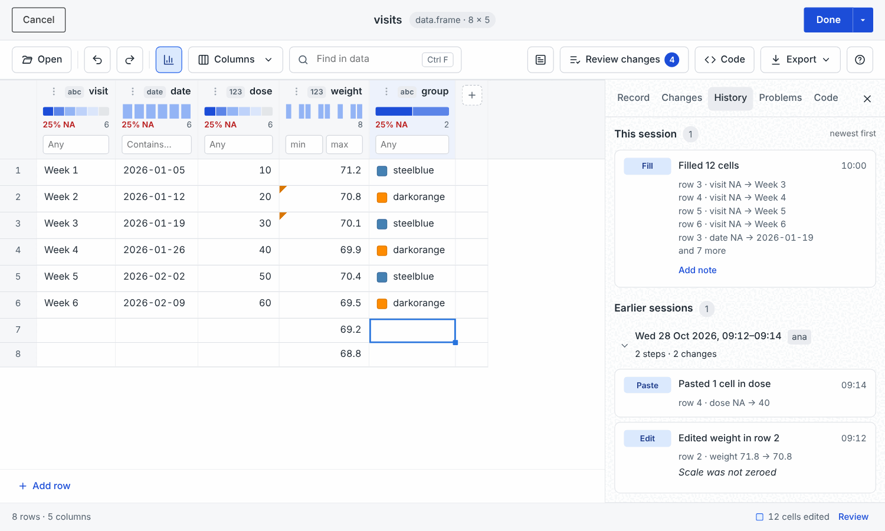
log can also be a function, which is called with the log
as a data frame, for example to write it to a database. Nothing is
written when Cancel is pressed. The user name is the name
you are logged in with; set
options(DataEditR.user = "Your Name") to record another
name.
9.5 Unsaved changes are kept
While you edit, data_edit() saves your changes as a
draft a moment after each change. If the editor is closed without
pressing Done or Cancel (the window was closed
by accident, R crashed or the computer restarted), open the same data
again and you are offered your unsaved changes:
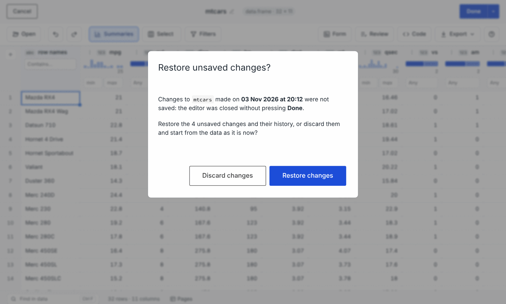
Restore changes brings back the data as you left it,
with its history and notes, and each restored step can still be undone.
Discard changes throws the draft away. Pressing
Cancel asks before your changes are thrown away.
Drafts are kept in
tools::R_user_dir("DataEditR", "data") and are removed when
you press Done or Cancel, when they are
restored or discarded, and after 30 days. Use
options(DataEditR.drafts = "path/to/folder") to keep them
elsewhere, or autosave = FALSE to turn drafts off.
9.6 Change tracking in shiny modules
Change tracking is also available when the data editor is used in
your own shiny applications through dataEditServer().
dataEditChanges() returns a summary of the changes that
have not been saved yet, dataEditLog() returns the change
log and dataEditCommit() saves the changes (and returns the
log of what it saved), after which the highlights are cleared. Set
autosave = TRUE in dataEditServer() to keep
drafts for each user of the app:
library(shiny)
library(DataEditR)
ui <- fluidPage(
actionButton("save", "Save"),
textOutput("unsaved"),
dataEditUI("edit")
)
server <- function(input, output, session) {
edited <- dataEditServer("edit",
data = reactive(mtcars),
track = TRUE)
output$unsaved <- renderText({
paste(dataEditChanges(edited)$total, "unsaved changes")
})
observeEvent(input$save, {
dataEditCommit(edited)
})
}
shinyApp(ui, server)10. Keyboard shortcuts
| Action | Shortcut |
|---|---|
| Edit cell | Double-click |
| Save / cancel edit |
Enter / Esc
|
| New line in a text area |
Shift+Enter or Alt+Enter
|
| Undo / redo |
Ctrl+Z / Ctrl+Y
|
| Select a range | Click and drag, Shift+click |
| Copy / paste range (also to and from spreadsheets) |
Ctrl+C / Ctrl+V
|
| Clear selected cells | Delete |
| Fill down | Ctrl+D |
| Find in data |
Ctrl+F, then Enter /
Shift+Enter
|
| Rename column | Double-click column name |
| Row and column menus | Right-click |
| Show the shortcuts | ? |
Use Cmd instead of Ctrl on a Mac.
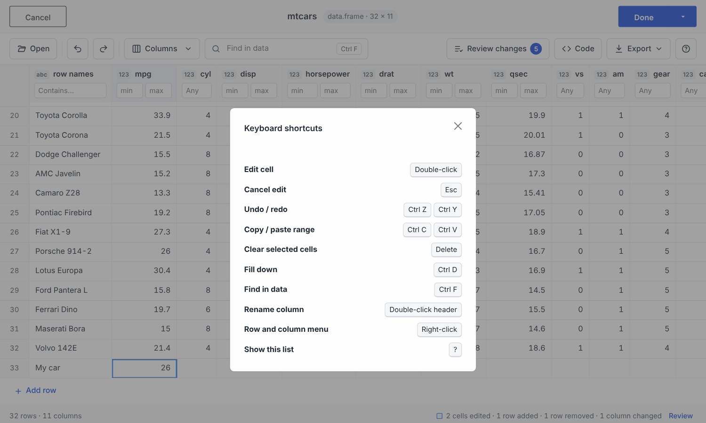
11. RStudio Add-in
DataEditR also ships with an RStudio add-in should you
prefer to interact with your data in this way. Simply highlight the name
of a dataset in an active script or the console and select
Interactive Data Editor from the list of
Addins in your RStudio session. If nothing is highlighted,
an empty table is opened instead. The add-in can be bound to a keyboard
shortcut through
Tools > Modify Keyboard Shortcuts....
12. Databases
data_edit() can also edit tables stored in a database.
Connect with DBI, pass a dbplyr lazy table
(optionally filtered) to data_edit() and the rows are
loaded into the editor. Changes are staged while you edit and written to
the database in a single transaction when you press Done
and confirm the summary of changes.
library(dplyr)
con <- DBI::dbConnect(RSQLite::SQLite(), "cars.sqlite")
data_edit(tbl(con, "cars") %>% filter(cyl == 6))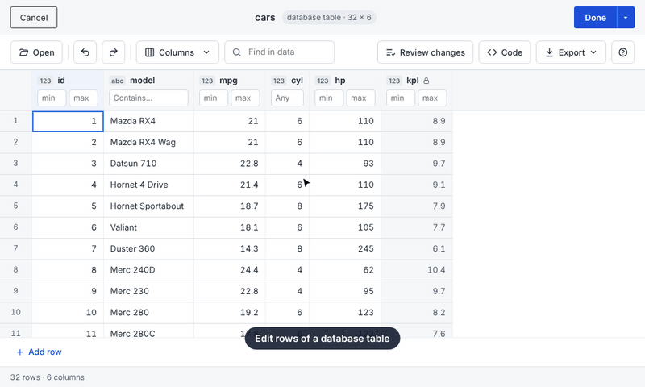
The same editor can be added to your own shiny apps, where
dataEditCommit() writes the changes to the database (for
example when a Save button is pressed) and
dataEditChanges() summarises what will be written. See
vignette("databases", package = "DataEditR") for how to
connect to different databases, how rows are matched to the database,
saving changes from shiny apps and what happens when someone else
changes the data while you are editing it.
13. Interactively Edit Googlesheets
DataEditR can also be used to interactively edit
googlesheets using googlesheets4. Simply authorise
googlesheets4, create a new sheet, edit the data using
data_edit() and write the edited data to the created
sheet.
library(googlesheets4)
# Authorise
gs4_auth(
email = "username@gmail.com"
)
# Create a sheet
ss <- gs4_create(
"mtcars"
)
# Edit data
mtcars_new <- data_edit(
mtcars,
save_as = ss,
write_fun = "write_sheet",
write_args = list(sheet = "mtcars")
)14. Exporting Code
For reproducibility, it is possible to export the code required to
generate the final edited version of your data. The generated code uses
tidyverse-style dplyr verbs to transform the original data
into the edited version.
14.1 See the code as you edit
Click Code in the toolbar to see the code that
reproduces your edits so far. The code updates as you edit and can be
copied with the Copy button. Column actions such as
formulas, find and replace, recoding, type changes and sorting (see Change whole columns) appear as one
dplyr verb each; other edits are listed as the values that
changed.
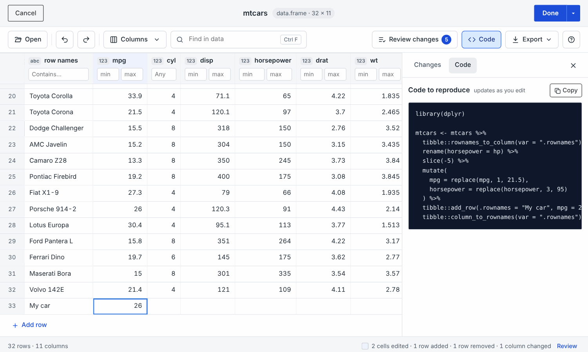
14.2 Print code to console
Set code = TRUE within data_edit() to print
the generated code to the console when you press Done. The
code uses dplyr verbs such as rename(),
select(), mutate(), slice(), and
tibble::add_row() to replicate your edits. Copying and
pasting this code into the console will recreate the edited version of
your data.
data_edit(mtcars,
code = TRUE)For example, renaming a column, modifying a cell value, removing a row and adding a new row might produce code like:
library(dplyr)
mtcars <- mtcars %>%
tibble::rownames_to_column(var = ".rownames") %>%
rename(horsepower = hp) %>%
slice(-5) %>%
mutate(
mpg = replace(mpg, 1, 21.5),
horsepower = replace(horsepower, 3, 95)
) %>%
tibble::add_row(.rownames = "My car", mpg = 26, cyl = NA, disp = NA,
horsepower = NA, drat = NA, wt = NA, qsec = NA, vs = NA,
am = NA, gear = NA, carb = NA) %>%
tibble::column_to_rownames(var = ".rownames")For database tables the code uses rows_update(),
rows_append() and rows_delete() to make the
same changes to the database. If other data is opened from the
Open menu, the code starts from that data instead
(e.g. iris <- iris %>% ...), and a new table is
created from scratch.
14.3 Save code to file
Alternatively, users can get DataEditR to automatically
create a new R script to store this code by providing a name for the R
script to code. For example, the below code creates a new R
script called mtcars_edit.R and inserts the code required
to programmatically generate the final edited version of your data.
data_edit(mtcars,
code = "mtcars_edit.R")14.4 Using data_code() directly
The data_code() function can also be used outside of
data_edit() to generate code from any pair of original and
edited data frames:
library(DataEditR)
# Original data
x <- data.frame(
A = c(1, 2, 3),
B = c("x", "y", "z"),
stringsAsFactors = FALSE
)
# Edited data (changed a value and renamed a column)
x_edit <- data.frame(
A = c(1, 5, 3),
Beta = c("x", "y", "z"),
stringsAsFactors = FALSE
)
# Generate code
cat(data_code(x, x_edit, name = "x"))
#> library(dplyr)
#>
#> x <- x %>%
#> rename(Beta = B) %>%
#> mutate(A = replace(A, 2, 5))15. Shiny modules
The data editor is also available as a shiny module, so you can add
an editable table to your own shiny applications with
dataEditUI() and dataEditServer():
library(shiny)
library(DataEditR)
ui <- fluidPage(
dataEditUI("edit")
)
server <- function(input, output, session) {
edited <- dataEditServer("edit", data = reactive(mtcars))
observe(print(head(edited())))
}
shinyApp(ui, server)Call dataEditCommit(edited) (for example when a
Save button is pressed) to save the changes: for database
tables this writes them to the database, and for other data the current
data becomes the new starting point for the review panel.
dataEditChanges(edited) returns the number of changes that
have not been saved yet, e.g. to enable the Save button only
when there is something to save. See
vignette("shiny-modules", package = "DataEditR") for the
options of the module, saving changes and how it works with the other
modules in DataEditR.
Summary
DataEditR is a powerful and interactive tool to make your data viewing, entry, filtering and editing as seamless as possible. If you need any help or encounter any issues with DataEditR please let me know by posting an issue on GitHub.